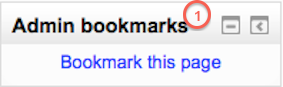
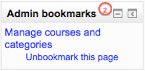

This block allows an administrator to bookmark site admin pages for easy access. These include the Notifications and Add/Edit courses pages. The administrator will then see the pages as a list of links.
Note: Only site admin pages can be bookmarked i.e. pages accessed via Administration > Site administration.
When on a page which may be bookmarked, the block shows ‘bookmark this page’. (1) Once bookmarked, the block shows the page name with a link and “Unbookmark this page”. (2)
 The admin bookmarks block is shown by default on all pages which can be bookmarked. An admin may choose to add the admin bookmarks block to their My home page or the front page (selecting ‘Display on the front page only’).
Note: Although an admin can add the admin bookmarks block to the front page of their site and make it display throughout the entire site, this is not recommended, since it results in teachers seeing the block when they turn editing on in their course.